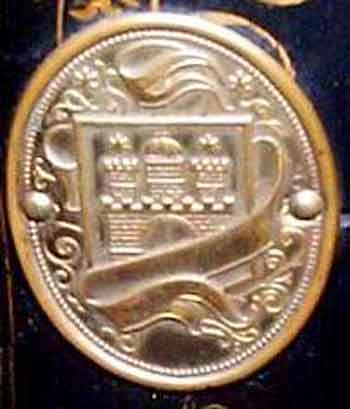

Catalogue of German Makers' Logos
J. Silberberg & Co. (distributors)
Hamburg

Picture courtesy of Barbara Lee Gates
©
Alan Quinn 2000 All Rights Reserved
This page may not be reproduced or distributed in part or in whole without the prior written permission of the relevant copyright owner